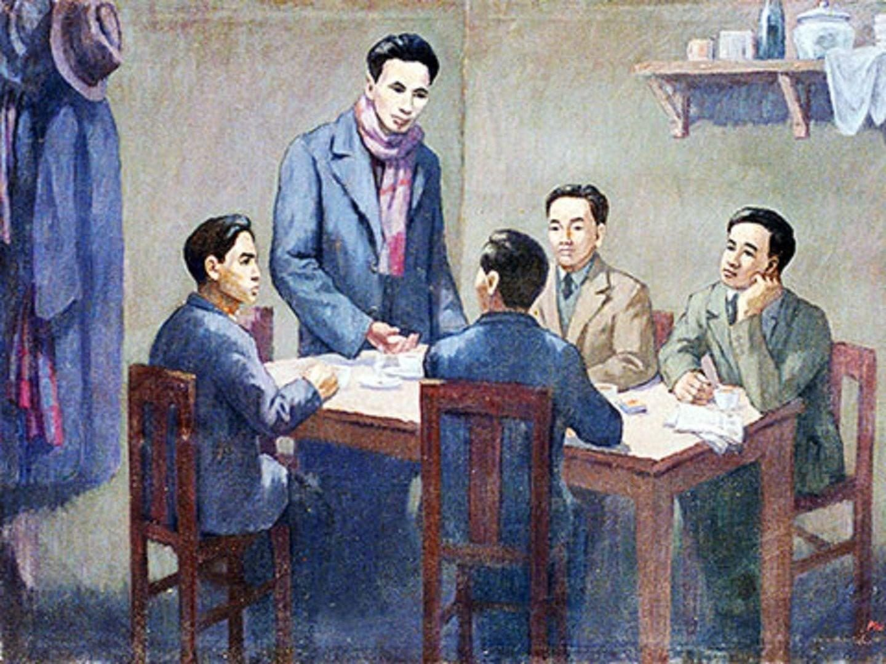
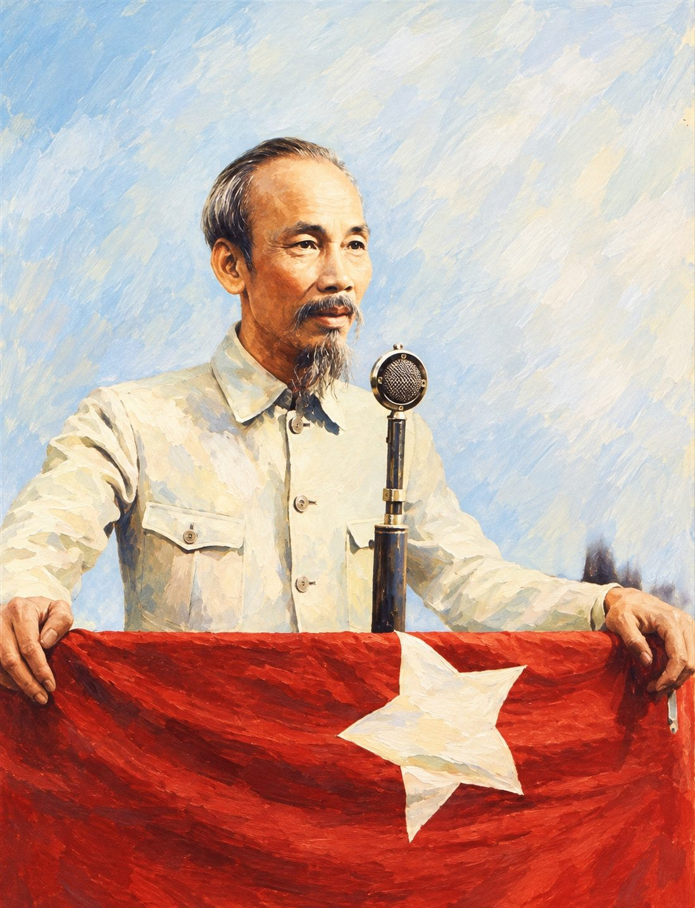

Triển lãm tư liệu lịch sử trực tuyến
THEO BƯỚC CHÂN NGƯỜI
★
Cuộc đời và sự nghiệp Chủ tịch Hồ Chí Minh
Giới thiệu
Một hành trình qua tám mốc lịch sử
Triển lãm trực tuyến này đưa người xem đi qua tám mốc lớn trong cuộc đời và sự nghiệp của Chủ tịch Hồ Chí Minh, từ tiểu sử, hành trình tìm đường cứu nước, sự ra đời của Đảng, ngày Người về nước, Tuyên ngôn Độc lập, chiến thắng Điện Biên Phủ, Chiến dịch Hồ Chí Minh đến bản Di chúc thiêng liêng.
Mỗi mốc là một trang riêng. Hình ảnh được phân loại rõ là ảnh tư liệu, tranh minh họa hoặc tranh AI, và đều có dòng ghi nguồn. Mời bạn cuộn xuống hoặc dùng thanh điều hướng phía trên.
Hành trình khám phá
8 mốc lịch sử

01
Tiểu sử Chủ tịch Hồ Chí Minh
1890 – 1969
02
Hành trình ra đi tìm đường cứu nước
05/6/1911

03
Đảng Cộng sản Việt Nam ra đời
1930

04
Về nước lãnh đạo cách mạng Việt Nam
28/1/1941

05
Nước Việt Nam Dân chủ Cộng hòa ra đời
02/9/1945

06
Chiến thắng Điện Biên Phủ lịch sử
07/5/1954

07
Chiến dịch Hồ Chí Minh toàn thắng
30/4/1975

08
Di chúc thiêng liêng
10/5/1965